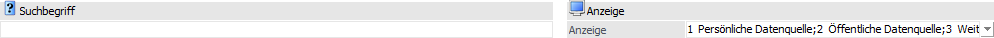
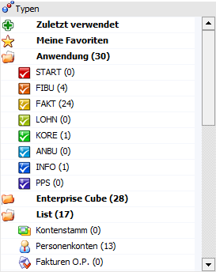
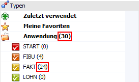
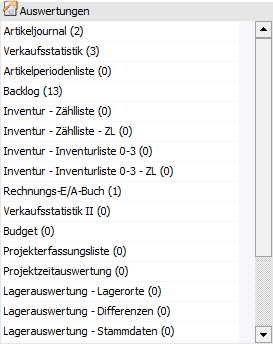
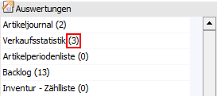
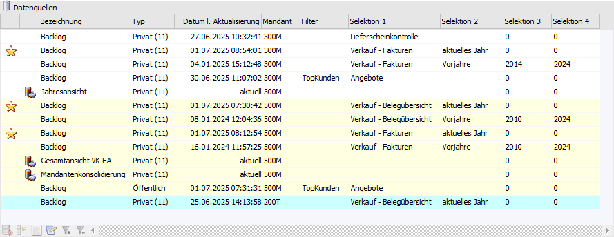
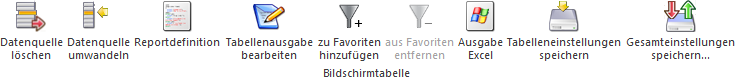
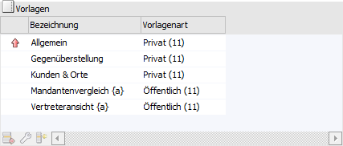

In dem Register "Datenquellen" werden die bestehenden Datenquellen mit ihren Snapshots, View und MasterViews angezeigt. Hierüber hinaus stehen eine Vielzahl von Verwaltungstools zur Verfügung, wie z.B.:
ü Datenausgabe auf Grundlage einer Datenquelle (Snapshot, View oder MasterView)
ü Löschen von Datenquellen (Snapshot, View oder MasterView)
ü Umwandeln von Datenquellen (Snapshot, View oder MasterView)
ü Exportieren bzw. Importieren von Datenquellen (Snapshots)

Das Register ist hierbei in die folgenden Bereiche untergliedert:
ü Suche und Anzeige
ü Tabelle "Typen"
ü Tabelle "Auswertungen"
ü Tabelle "Datenquellen"
ü Tabelle "Vorlagen" (optional zu aktivieren)
Suche und Anzeige

In diesem Bereich kann die Suche und die Anzeige gesteuert werden.
Ø Suchbegriff
Durch Eingabe und Bestätigung eines Suchbegriffs wird in den Datenquellen eine Volltextsuche durchgeführt und der Fokus auf den ersten passenden Eintrag gestellt. Durch Anwahl des Buttons "Anzeige" bzw. der Taste F5 wird zur nächsten passenden Datenquelle gewechselt.
Hinweis
Standardmäßig wird in der Bezeichnung der Datenquelle nach dem Suchbegriff gesucht. Soll in den Spalten "Filter" oder "Selektion 1" bis "Selektion 4" eine Suche erfolgen, so kann dieses fix über die Datenquellenverwaltung - Einstellungen definiert (Bereich "Suchoptionen - Suche erfolgt bei…") oder über folgende Kriterien angegeben werden, wobei alle Elemente auch in Kombination genutzt werden können:
ü #Filter#Suchbegriff
Sobald
#Filter# eingegeben wurde, wird mit dem nachfolgende Begriff nicht in der
Bezeichnung der Datenquelle, sondern in dem Filter der Datenquelle gesucht.
ü #Sel1#Suchbegriff /
#Sel2#Suchbegriff / #Sel3#Suchbegriff / #Sel4#Suchbegriff
Sobald #Selx# (x
=> 1 bis 4) eingegeben wurde, wird mit dem nachfolgenden Begriff nicht in der
Bezeichnung der Datenquellen, sondern in der Selektion 1, Selektion 2, Selektion
3 oder Selektion 4 der Datenquelle gesucht.
Beispiel
Es wird nach einer Datenquelle mit der Bezeichnung "Verkaufszahlen" (z.B. eine List-Auswertung) gesucht, wobei der Filter "2024" lautet und die Selektion 3 "Vertreter Meier". Der Suchbegriff lautet wie folgt:
ü
Syntax
Datenquellenbezeichnung#Filter#Filtername#Sel3#Selektion
3
ü
Suchbegriff
Verkaufszahlen#Filter#2024#Sel3#Vertreter
Meier
Ø Anzeige
Mit Hilfe der hier zur Verfügung stehenden Mehrfachauswahl kann definiert werden, welche Datenquellen und Auswertungen dargestellt werden sollen. Die gewählte Einstellung wird hierbei benutzerspezifisch gespeichert.
ü Persönliche Datenquelle
Durch
Aktivierung dieser Option werden in der Tabelle "Datenquellen" die persönlichen
Datenquellen des aktuellen Mandanten angezeigt.
ü Öffentliche Datenquelle
Durch
Aktivierung dieser Option werden in der Tabelle "Datenquellen" die öffentlichen
Datenquellen des aktuellen Mandanten angezeigt.
ü Weitere Mandanten
Durch
Aktivierung dieser Option werden in der Tabelle "Datenquellen" auch die
Datenquellen von anderen Mandanten angezeigt. Die Darstellung solcher Zeilen
erfolgt mit einer gelben Unterlegung.
ü Alle Auswertungen
Handelt es
sich bei dem aktuellen Benutzer um einen Volladministrator oder um einen
Benutzer mit dem Teiladministrationsrecht "Datenadministration", so steht diese
Option zur Verfügung. Durch Aktivierung werden in der Tabelle "Auswertungen"
auch all jene Auswertungen angezeigt, für welche der Benutzer keine
Objektberechtigungen besitzt. Die Darstellung solcher Zeilen erfolgt mit einer
orangen Unterlegung.
ü Weitere Datenquellen
Handelt es
sich bei dem aktuellen Benutzer um einen Volladministrator oder um einen
Benutzer mit dem Teiladministrationsrecht "Datenadministration", so steht diese
Option zur Verfügung. Durch Aktivierung werden in der Tabelle "Datenquellen"
alle Datenquellen der anderen Benutzer angezeigt (die Darstellung solcher Zeilen
erfolgt mit einer orangen Unterlegung). In der weiteren Folge betrifft dieses
auch die Power Report-Vorlagen, welche mit Hilfe des Buttons "Power
Report-Vorlagen anzeigen / verstecken" eingeblendet werden können.
ü Importierte Datenquelle
Durch
Aktivierung dieser Option werden in der Tabelle "Datenquellen" importierte
Datenquellen angezeigt (siehe auch Button "Datenquelle importieren"). Die
Darstellung solcher Zeilen erfolgt mit einer blauen Unterlegung.
Hinweis
Die Anzeige von Datenquellen ist abhängig von den Rechten eines Benutzers (Mandantenberechtigung, Applikationsberechtigung, Objektberechtigung auf die WinLine LIST-Liste / den Enterprise Cube). D.h. wenn der Benutzer z.B. keine Berechtigungen für den Mandanten "300M" besitzt, so werden auch keine Datenquellen aus diesem Mandanten angezeigt.
Eine Ausnahme bildet hierbei die Darstellung von importierten Datenquellen. Diese sind vom Benutzer immer sichtbar, sobald ein grundsätzliches Zugriffsrecht auf die Auswertung besteht.
Tabelle "Typen"

In der Tabelle werden entsprechenden der Programmberechtigungen die unterschiedlichen Auswertungstypen (Programmbereiche / Cubes / Listen / FORM) angezeigt. Durch Anwahl eines Typs wird die Tabelle "Auswertung" entsprechend gefüllt. Neben den Typen "Anwendung", "Enterprise Cube", "List" und "FORM" stehen noch folgende weitere Auswahlen zur Verfügung:
ü
In der Rubrik "Zuletzt verwendet" werden
jene Datenquellen / Snapshots angezeigt, welche vom Benutzer zuletzt in der
Datenquellenverwaltung verwendet wurden.
Hinweis
Im Standard werden 10 Einträge angezeigt. Die Anzahl ist aber variabel und kann in den Einstellungen verändert werden.
ü
In der Rubrik "Meine Favoriten" werden
die eigenen Favoriten angezeigt. Die Favoriten werden mit Hilfe des
Tabellenbuttons "zu Favoriten hinzufügen" (Tabelle "Datenquellen")
definiert.
Hinweis
Die Zahl hinter dem Bereich bzw. Typ gibt an, wie viele Datenquellen innerhalb des Bereichs bzw. Typs bereits vorhanden sind.

Tabelle "Auswertungen"

In der Tabelle werden alle Auswertungen, gemäß dem zuvor gewählten Typ (siehe Tabelle "Typen"), angezeigt. Durch Anwahl einer Auswertung wird die Tabelle "Datenquellen" entsprechend gefüllt.
Hinweis
Die Zahl hinter der Auswertung gibt an, wie viele Datenquellen für die Auswertung vorhanden sind.

Tabelle "Datenquellen"

In der Tabelle werden alle Datenquellen (Snapshots, Views und MasterViews), gemäß der zuvor gewählten Auswertung (siehe Tabelle "Auswertungen"), angezeigt.
Ø farbliche Hinterlegung
Mit Hilfe der folgenden farblichen Hinterlegung wird dargestellt, aus welchem Mandanten bzw. von welchem Benutzer die Datenquelle stammt:
ü  - Datenquelle aus dem aktuellen
Mandanten
- Datenquelle aus dem aktuellen
Mandanten
ü  - Datenquelle eines anderen Mandanten
- Datenquelle eines anderen Mandanten
ü  - Datenquelle eines anderen Benutzers
- Datenquelle eines anderen Benutzers
ü - Importiere Datenquelle
Hinweis
In den Einstellungen kann die Hinterlegung auf Wunsch deaktiviert werden.
Ø Favorit
An dieser Stelle wird mit Hilfe des Icons  dargestellt, ob es sich um einen
Favoriten handelt.
dargestellt, ob es sich um einen
Favoriten handelt.
Ø ID [optional]
In dieser optionalen Spalte wird die eindeutige ID einer View bzw. MasterView dargestellt. Bei Snapshot wird wiederum der Verweis zur Auswertung angezeigt.
Ø Typ (Anzeige) [optional]
Hier wird über eine Zahl u.a. dargestellt, aus welchem Mandanten die Datenquelle stammt:
ü 1 - persönliche Datenquelle aus dem aktuellen Mandanten
ü 2 - öffentlichen Datenquelle aus dem aktuellen Mandanten
ü 3 - Datenquelle eines anderen Mandanten
ü 6 - Importiere Datenquelle
Ø Typ (View)
Handelt es sich bei der Datenquelle um eine View oder MasterView, so wird auf dieses mit Hilfe der folgenden Icons hingewiesen:
ü  - View
- View
Bei der Datenquelle handelt es sich
um eine View.
ü  - MasterView
- MasterView
Bei der Datenquelle handelt
es sich um eine MasterView.
Hinweis
Die Administration von MasterViews erfolgt im Programm Datenquellen - MasterView.
Ø Typ [optional]
In dieser optionalen Spalte wird das Icon der Auswertung dargestellt.
Ø Auswertung [optional]
Hier wird der Name der Auswertung, mir Hilfe jener die Datenquelle erzeugt wurde, angezeigt.
Ø Bezeichnung
In dieser Spalte wird bei Snapshots die Bezeichnung der Auswertung, mir Hilfe jener die Datenquelle erzeugt wurde, angezeigt. Handelt es sich hingegen um eine View oder MasterView, so wird der View-Name ausgewiesen.
Ø Typ
Hier wird dargestellt, ob es sich um eine öffentliche oder eine private Datenquelle handelt. Die Zahl hinter dem Wort "Privat" gibt die Nummer des Benutzers an.
Ø Benutzername [optional]
An dieser Stelle wird der Loginname des Benutzers angezeigt, welcher die Datenquelle erzeugt hat.
Hinweis
Bei öffentlichen Datenquellen ist hierüber komfortabel erkennbar, welcher Benutzer die öffentliche Datenquelle erzeugt hat.
Ø Datum l. Aktualisierung
In dieser Spalte wird bei Snapshots das Datum der letzten Aktualisierung dargestellt. Views bzw. MasterViews sind eine Sicht auf die Daten und erhalten daher den Eintrag "aktuell".
Ø Mandant
Hier wird der Mandant angezeigt, von welchem die Datenquelle erzeugt wurde.
Ø Filter
In dieser Spalte wird der Filter angezeigt, mit Hilfe dessen die Datenquelle erzeugt wurde.
Ø Selektion 1 bis 4
An dieser Stelle werden die Selektionen der Datenquellen (Snapshots) angezeigt. Hierbei handelt es sich bei Selektion 1 und 2 um Textfelder (100 Zeichen) und bei Selektion 3 und 4 um Zahlenfelder (10stellig ohne Nachkommastellen).
Ø Anzahl Datensätze [optional]
Hier wird die Anzahl der Datensätze dargestellt, welche sich in der Datenquelle befinden.
Ø Ausführungsdauer [optional]
In dieser optionalen Spalte wird die Dauer der Datenquellenerzeugung angezeigt.
Ø Action Server
An dieser Stelle wird angezeigt, ob es für den Snapshot bereits einen Action Server-Eintrag - für eine automatische Aktualisierung - gibt.
Ø Schlüsselobjekt (FORM) [optional]
Hier wird bei Datenquellen des Typs "FORM" das Schlüsselobjekt angezeigt.
Hinweis
Unter "Schlüsselobjekt" versteht man einen eindeutigen Wert, welchen es in der FORM-Datenquellen nur 1x pro Datensatz geben darf.
Ø Schlüsselobjektbezeichnung (FORM) [optional]
In dieser optionalen Spalte wird die Bezeichnung des Schlüsselobjekts angezeigt (nur bei FORM-Datenquellen).
Tabellenbuttons "Datenquellen"

Ø Datenquelle löschen
Mit Hilfe dieses Buttons kann die ausgewählte Datenquelle gelöscht werden. Eine Ausnahme bilden hierbei Datenquellen des Typs "FORM", welche nur über den FORM-Designer gelöscht werden können.
Sollte es sich bei der zu löschenden Datenquelle um die letzte private bzw. öffentliche Datenquelle der Auswertung handeln, so wird zusätzlich abgefragt, ob auch die Power Report-Vorlagen der Datenquelle gelöscht werden sollen (falls welche vorhanden sind).
Hinweis 1
Handelt es sich bei dem aktuellen Benutzer nicht um einen Volladministrator oder um einen Benutzer mit dem Teiladministrationsrecht "Datenadministration", so können nur persönliche Datenquellen (Snapshots bzw. MasterViews) gelöscht werden.
Hinweis 2
Sollen bei dem Löschen der letzten öffentlichen Datenquelle auch die Vorlagen gelöscht werden, so erfolgt dieses für alle Power Report-Vorlagen der öffentlichen Datenquellen, unabhängig vom Benutzer!
Ø Datenquelle umwandeln
Mit Hilfe des Buttons "Datenquelle umwandeln" können Volladministratoren oder Benutzer mit dem Teiladministrationsrecht "Datenadministration" die aktuelle Datenquelle (d.h. den Snapshot, die View oder die MasterView) umbenennen oder auf einen anderen Benutzer übertragen bzw. veröffentlichen (weitere Informationen entnehmen Sie bitte dem Kapitel Datenquelle umwandeln).
Hinweis
Diese Funktionen stehen bei Datenquellen des Typs "FORM" nicht zur Verfügung.
Ø Reportdefinition
Durch Anwahl des Buttons "Reportdefinition" wird eine Action Server-Aktion zur Aktualisierung des gewählten Snapshots angelegt. Sollte bereits eine Definition vorhanden sein, so wird diese automatisch geladen (z.B. um den Intervall anzupassen).
Hinweis
Der Button zur Anlage von Action Server-Aktionen steht nur zur Verfügung, wenn es sich um einen Snapshot handelt, welcher aus einer WinLine LIST-Liste (Filter ist erforderlich) oder einem Enterprise Cube erzeugt wurde.
Des Weiteren können Action Server-Aktionen für öffentliche Datenquellen des Typs "Snapshot" nur definiert bzw. editiert werden, wenn eine Objektberechtigung größer "lesen" vorhanden ist.
Das Editieren von Aktionen für öffentliche Datenquellen des Typs "Snapshot" aus dem Bereich "Anwendung" ist Volladministratoren und Benutzern mit dem Teiladministrationsrecht "Datenadministration" vorbehalten.
Ø Tabellenausgabe bearbeiten
Mit Hilfe des Buttons "Tabellenausgabe bearbeiten" kann die Tabellenausgabe von Datenquellen (Snapshots) aus dem Bereich "Anwendung" um eigene Anmerkungsfelder erweitert werden (nähere Informationen entnehmen Sie bitte dem Kapitel Benutzerdefinierte Auswertungsspalten).
Hinweis
Die Bearbeitung ist ausschließlich Volladministratoren oder Benutzern mit dem Teiladministrationsrecht "Datenadministration" vorbehalten.
Ø zu Favoriten hinzufügen / aus Favoriten entfernen
Abhängig davon, ob die Datenquelle bereits als Favoriten gekennzeichnet wurde oder nicht, stehen die folgenden Buttons zur Verfügung:
ü zu Favoriten hinzufügen
Mit
Hilfe dieses Buttons kann eine Datenquelle in die Rubrik "Meine Favoriten"
übergeben werden.
ü aus Favoriten entfernen
Wurde
die ausgewählte Datenquelle bereits als Favorit gekennzeichnet, so kann mit
Hilfe dieses Buttons die Datenquelle aus den Favoriten entfernt werden (die
Datenquelle als solches bleibt natürlich erhalten).
Ø Ausgabe Excel
Durch Anwahl des Buttons "Ausgabe Excel" wird der Inhalt der Tabelle an Microsoft Excel übergeben.
Ø Tabelleneinstellungen speichern
Die Spalten einer Tabelle können grundsätzlich an beliebige Positionen verschoben, bzw. in der Breite entsprechend angepasst werden. Durch Anwahl des Buttons "Tabelleneinstellungen speichern" werden die Einstellungen benutzerspezifisch gespeichert und bei dem nächsten Aufruf des Programmpunktes wieder vorgeschlagen.
Ø Gesamteinstellungen speichern
Im Gegensatz zu "Tabelleneinstellungen speichern" können mit "Gesamteinstellungen speichern" mehrere Tabellenaufbauten gespeichert und nach Wunsch geladen werden. Zusätzlich werden Sonderfunktionen der Tabelle (z.B. "Spalte gruppieren") ebenfalls bei der Speicherung bedacht.
Tabelle "Vorlagen"

Durch Anwahl des Buttons "Power Report-Vorlagen anzeigen / verstecken" kann die Tabelle "Vorlagen" ein- bzw. ausgeblendet werden. Innerhalb der Tabelle werden die Power Report-Vorlagen des Benutzers, bezogen auf die Auswertung / Datenquelle, angezeigt.
Hinweis
Durch Anwahl einer Vorlage (Doppelklick oder Taste "Enter") wird automatische der Power Report geöffnet und die gewählte Vorlage dargestellt. Das anzuzeigende Datenmaterial bezieht sich wiederum auf die zuvor gewählte Datenquelle (siehe Tabelle "Datenquellen").
Ø Standardvorlage
Mit Hilfe des Symbols  wird die Standardvorlage
gekennzeichnet.
wird die Standardvorlage
gekennzeichnet.
Ø Bezeichnung
In dieser Spalte wird die Bezeichnung der Vorlage angezeigt.
Hinweis
Handelt es sich um einen Vorlagen mit "{}" (z.B. "Vertreteransicht {a}"), so handelt es sich um eine öffentliche Vorlage, welche von dem Benutzer (z.B. "a") veröffentlich wurde.
Ø Vorlagenart
Hier wird dargestellt, ob es sich um eine öffentliche oder eine private Vorlage handelt. Die Zahl hinter dem Wort "Privat" bzw. "Öffentlich" gibt die Nummer des Benutzers an.
Ø Benutzername [optional]
An dieser Stelle wird der Loginname des Benutzers angezeigt, welcher die Vorlage erzeugt hat.
Tabellenbuttons "Vorlagen"

Ø Vorlage löschen
Mit Hilfe dieses Buttons kann die ausgewählte Vorlage gelöscht werden.
Hinweis
Handelt es sich bei dem aktuellen Benutzer nicht um einen Volladministrator oder um einen Benutzer mit dem Teiladministrationsrecht "Datenadministration", so können nur eigene Vorlagen gelöscht werden.
Ø Vorlage kopieren
Durch Anwahl dieses Buttons können Vorlagen kopiert werden (weitere Informationen entnehmen Sie bitte dem Kapitel Vorlage kopieren).
Ø Vorlage umwandeln
Eine Power Report-Vorlage steht immer im Kontext zu einer persönliche oder einer öffentlichen Datenquelle. Soll diese Art der Zuordnung geändert werden, so kann dieses mit Hilfe des Tabellenbuttons "Vorlage umwandeln" geschehen (weitere Informationen entnehmen Sie bitte dem Kapitel Vorlage umwandeln).
Ø Ausgabe Excel
Durch Anwahl des Buttons "Ausgabe Excel" wird der Inhalt der Tabelle an Microsoft Excel übergeben.
Ø Tabelleneinstellungen speichern
Die Spalten einer Tabelle können grundsätzlich an beliebige Positionen verschoben, bzw. in der Breite entsprechend angepasst werden. Durch Anwahl des Buttons "Tabelleneinstellungen speichern" werden die Einstellungen benutzerspezifisch gespeichert und bei dem nächsten Aufruf des Programmpunktes wieder vorgeschlagen.
Ø Gesamteinstellungen speichern
Im Gegensatz zu "Tabelleneinstellungen speichern" können mit "Gesamteinstellungen speichern" mehrere Tabellenaufbauten gespeichert und nach Wunsch geladen werden. Zusätzlich werden Sonderfunktionen der Tabelle (z.B. "Spalte gruppieren") ebenfalls bei der Speicherung bedacht.